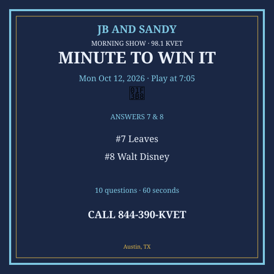
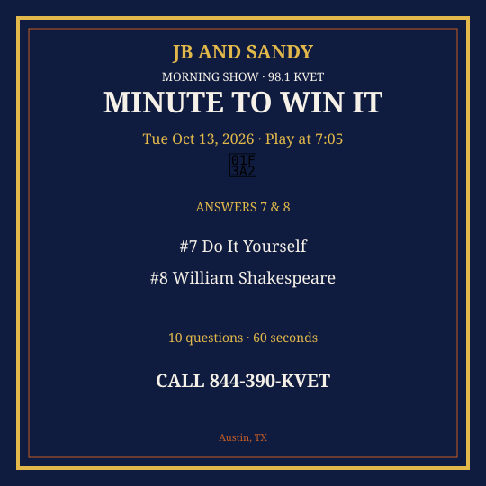
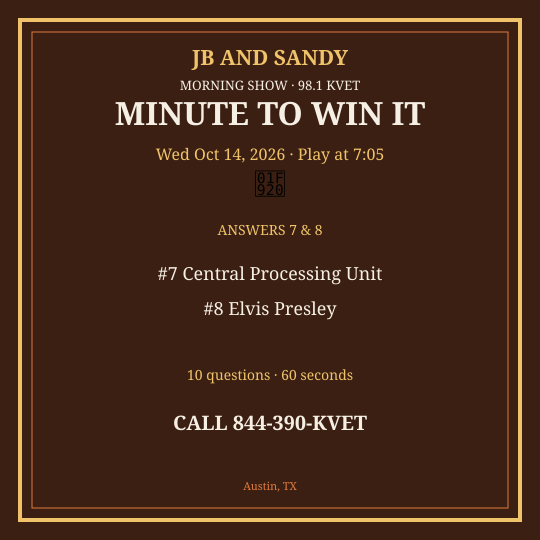
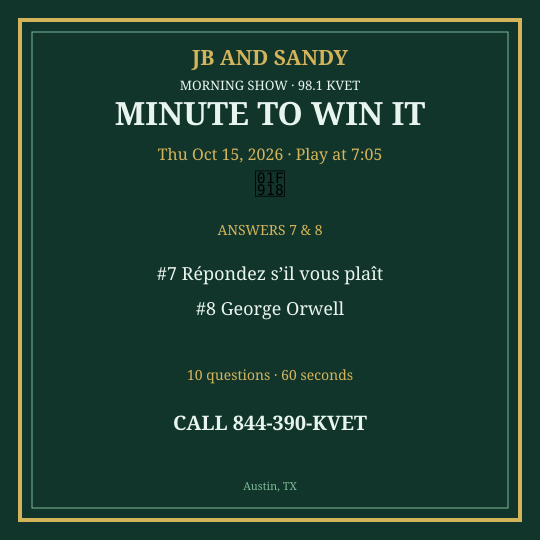

M2W Oct 12-16 2026
New packet. Questions get harder as you go. Graphics are Q7 & Q8 only.
Monday — Mon Oct 12, 2026
Question 1: What do you put on a toothbrush?
Answer: Toothpaste
Question 2: How many letters in the English alphabet?
Answer: 26
Question 3: Which Austin grocery chain is a Texas religion?
Answer: H-E-B
Question 4: What do you call a house made of ice?
Answer: Igloo
Question 5: Which sport uses a shuttlecock?
Answer: Badminton
Question 6: What is the capital of Mexico?
Answer: Mexico City
Question 7: What part of the plant takes in sunlight?
Answer: Leaves
Question 8: Who created Mickey Mouse?
Answer: Walt Disney
Question 9: What is 2 to the 8th power?
Answer: 256
Question 10: Which U.S. state is called the Lone Star State?
Answer: Texas
Social card for Q7 & Q8 — download and post:
{kind=link}

Tuesday — Tue Oct 13, 2026
Question 1: What do you wear to tell time on your wrist?
Answer: Watch
Question 2: How many quarters in a football game?
Answer: Four
Question 3: What is the name of UT’s fight song?
Answer: The Eyes of Texas
Question 4: What do you call a doctor who treats animals?
Answer: Veterinarian
Question 5: Which planet is famous for its Great Red Spot?
Answer: Jupiter
Question 6: What is sushi traditionally wrapped in?
Answer: Nori / seaweed
Question 7: What does DIY stand for?
Answer: Do It Yourself
Question 8: Who wrote “Romeo and Juliet”?
Answer: William Shakespeare
Question 9: What is the speed of light, roughly, in miles per second?
Answer: 186,000
Question 10: Which mountain range includes the Matterhorn?
Answer: Alps
Social card for Q7 & Q8 — download and post:
{kind=link}

Wednesday — Wed Oct 14, 2026
Question 1: What do you sit on at a dining table?
Answer: Chair
Question 2: How many seconds in a minute?
Answer: 60
Question 3: What is the name of Austin’s airport code?
Answer: AUS
Question 4: What color is a ripe banana?
Answer: Yellow
Question 5: Which country is home to the kangaroo?
Answer: Australia
Question 6: What is the largest organ of the human body?
Answer: Skin
Question 7: What does CPU stand for?
Answer: Central Processing Unit
Question 8: Who was known as the King of Rock and Roll?
Answer: Elvis Presley
Question 9: What is the chemical formula for table salt?
Answer: NaCl
Question 10: Which war ended with the Treaty of Versailles?
Answer: World War I
Social card for Q7 & Q8 — download and post:
{kind=link}

Thursday — Thu Oct 15, 2026
Question 1: What do you dry dishes with?
Answer: Towel
Question 2: How many players on a basketball court for one team?
Answer: Five
Question 3: What is Franklin Barbecue famous for serving?
Answer: Brisket
Question 4: What is a baby cat called?
Answer: Kitten
Question 5: Which planet is called Earth’s twin?
Answer: Venus
Question 6: What is the main gas in Earth’s atmosphere?
Answer: Nitrogen
Question 7: What does RSVP stand for (from French)?
Answer: Répondez s’il vous plaît
Question 8: Who wrote “1984”?
Answer: George Orwell
Question 9: What is the next prime after 7?
Answer: 11
Question 10: In which city is the Liberty Bell?
Answer: Philadelphia
Social card for Q7 & Q8 — download and post:
{kind=link}

Friday — Fri Oct 16, 2026
Question 1: What do you put in a lamp to make it light (old school)?
Answer: Bulb
Question 2: How many Great Lakes are there?
Answer: Five
Question 3: What is the name of the Austin bats’ bridge?
Answer: Congress Avenue Bridge
Question 4: What is 7 × 8?
Answer: 56
Question 5: Which country has the most people?
Answer: India (current) or China — accept India
Question 6: What scale measures earthquakes?
Answer: Richter / moment magnitude
Question 7: What does HTML stand for?
Answer: HyperText Markup Language
Question 8: Who composed “The Magic Flute”?
Answer: Mozart
Question 9: What year did the Berlin Wall fall?
Answer: 1989
Question 10: What is the capital of South Korea?
Answer: Seoul
Social card for Q7 & Q8 — download and post:
{kind=link}